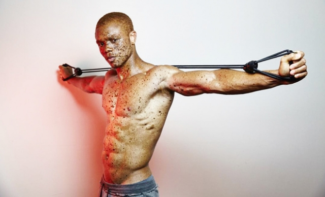

Пигментные пятна: какими они бывают и как с ними бороться
Каждая женщина хоть один раз задумывалась о природе и цели каких-либо "отметин" на теле. Так, если с родинками все более-менее понятно, то природа и опасность пигментных пятен еще находится под вопросом. Некоторые считают, что они опасны, другие, что некрасиво, а третьи, например, просто обожают девушек с веснушками , которые (спойлер) тоже относятся к пигментным пятнам. Давай разберемся, что это, опасно ли, стоит ли бороться.
 Live Journal
Live Journal Facebook
Facebook Twitter
TwitterНа самом деле, пигментные пятна не так страшны, как нам может показаться. Да, они могут выглядеть не очень эстетично и доставлять некоторый дискомфорт, но, даже, в самых некрасивых веснушках можно найти красоту (а если не получится, то просто закрасить тональным кремом). Однако, веснушки — не единственный вид пигментных пятен, которые могут поселиться на нашем теле. Их целая стая!
Давай разберемся, какие пигментные пятна существуют и от каких (а главное, как) можно избавиться.
Что такое пигментные пятна?
Пигментные пятна — это гиперпигментация кожи , которая может быть вызвана в связи с неравномерным распределением на кожи меланина (кожного пигмента). Проще говоря, он собирается в одних участках и игнорирует другие, делая "пораженную" кожу более темного оттенка . Гиперигментация чаще всего бывает у женщин после 40 и во время беременности.
Помимо меланина за нашу с тобой красочную кожу отвечает около пяти разных пигментов, которые ты должна знать в лицо. А именно:
- меланин;
- каротин;
- меланоид;
- оксигемоглобин;
- восстановленный гемоглобин.
Почему появляются пигментные пятна?
Существует ряд внутренних и внешних причин, по которым на коже могут появиться пигментные пятна. Самые распространенными из них являются:
- заболевания желчного и сопутствующих органов;
- гормональный дисбаланс;
- недостаток в организме витаминов (например, витамина С или фолиевой кислоты);
- переизбыток солнца ;
- последствия каких-либо травмирующих действий (вплоть до выдавливания прыщей);
- косметика с раздражающими кожу компонентами;
Какие бывают пигментные пятна?
Так, мы уже говорили о том, что пигментных пятен можно найти огромное количество — они разные и по своей природе и "назначению", и методу борьбы с ними.
Веснушки
Веснушки — самый распространенный и безопасный вид пигментных пятен. Они очень часто появляются у людей со светлой и чувствительной кожей в качестве "ответа" на длительное пребывание на солнце. Проще говоря, это своего рода защитная реакция организма.
Количество веснушек зависит от времени года: зимой их меньше, а летом — больше. Веснушки могут быть не только на лице, но и на руках и груди, "окрашивая" все части тела, которые часто находятся на солнце.
Если тебе не нравится веснушки и ты хочешь их убрать, то надежда есть. Дело в том, что веснушки по своей природе не глубокие пигментные пятна и легко убираются в тела с помощью химического пилинга с молочной и фруктовыми кислотами.
Однако, именно такой пилинг может вызвать еще большее их наличие из-за того, что косметологические процедуры меняют светочувствительность. Не стоит забывать про солнцезащитные кремы.
Возрастные пигментные пятна
Пигментные пятна, также, могут быть изменением кожи в связи с возрастом. В народе их называют неприятным словом "старческая рябь" и появляется на тех участках тела, которые больше всего подвергались солнечному воздействию. Например, зона декольте, верхняя часть спины и руки. На этих участках пятна появляются чаще всего.
Лентиго (медицинское название возрастных пигментных пятен) усиливается в период менопаузы так как происходит полная перестройка гормонального фона женщины.
К сожалению, избавиться от лентиго практически нельзя и скрыть тоже. Из-за своей интенсивности они практически не поддаются тональному крему.
Крупные пигментные пятна
Крупные пигментные пятна или мелазмы появляются на лице, преимущественно, у молодых женщин. Они неправильной формы и могут сливаться, создавая собой одно большое пятно странной формы. Могут задеть, максимум, область шеи и ушей, но дальше не "идут".
Такие пятна появляются из-за нарушения гормонального фона и подлежат лечению.
Избавиться от крупных пигментных пятен можно с помощью косметических средств, в составе которых находятся гормоны — мази, масла и другие назначенные врачом, препараты.

Также, помогут косметологические процедуры, которые направлены на отбеливание и отшелушивание. Они ускорят процесс избавления от пигментных пятен.
Родимые пигментные пятна
Родимые пятна — источник страха всех девушек. Он действительно могут перерасти в что-то нехорошее и злокачественное, поэтому, с ними, действительно, стоит быть аккуратнее.
Они выглядят, как ровные участки гиперпигментации, которые являются, дефектом. К сожалению, лечению не подлежат. И их лучше не трогать, чтобы не навлечь на себя беду.
Гипопигментация кожи
Если веснушки и родимые пятна относятся к гиперпигментации кожи, то к пигментным пятнам относят, также, полное отсутствие какого-либо цвета на коже. Это связано с тем, что меланин не вырабатывается в коже, делая ее белой и бесцветной.
К таким явлениям относят альбинизм и витилиго — редкие патологии кожи, которые появляются по неизвестным причинам. Организм человека не вырабатывает или практически не имеет мелантоциты (гормоны, отвечающие за пигментацию).
При этих патологиях стоит избегать солнечного света и носить линзы (при альбинизме). Полного излечения от альбинизма и витилиго нет. Лечение направлено на улучшение качества жизни и замедление процессов "побеления" кожи.
- Для чего нам нужна цветочная вода: вся правда про цветочную воду (+ПОДБОРКА СРЕДСТВ)
- Секреты красоты певицы Глюкозы: все про косметику, спорт и питание Натальи Ионовой (+ВИДЕО)
- Осторожно: какие косметологические процедуры можно делать летом (+МНЕНИЕ ЭКСПЕРТА)
- Для чего нам нужны ночные маски для лица (+ПОДБОРКА СРЕДСТВ)
- Сохрани в закладки: самые популярные бьюти-процедуры для лица в одном материале
- Как ухаживать за нарощенными ресницами: советы и лайфхаки (+ВИДЕО)
- Бьюти-тренд: мультимистинг как увлажняющие и питательные "духи" для кожи (+МНЕНИЕ ЭКСПЕРТА)
- Как часто нужно делать чистку лица: все "за" и "против"
- С глаз долой: как снять нарощенные ресницы в домашних условиях (+ВИДЕО)
- Вечно красивая: Джейн Фонда в свои 79 лет восхищает изящество и стилем